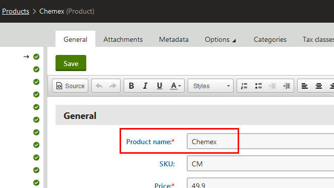
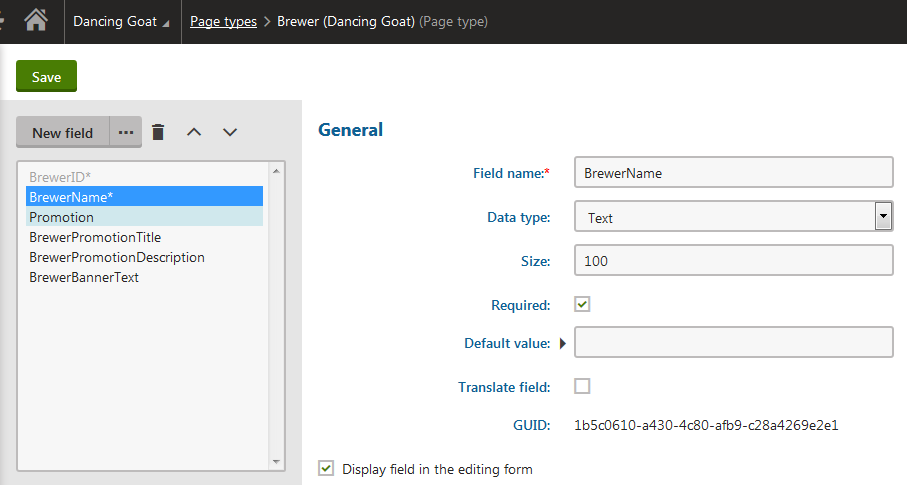
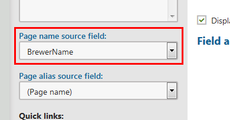

Mapping product type database columns
When using pages, you can set the page type's Page name source attribute to determine the mapping of the page type database columns. However, products from the E-commerce Solution connect the CMS_Document table and the given product page type's table also to the COM_SKU table. On this page, you can find which columns are mapped to which other columns.
The SKUName, SKUShortDescription and SKUDescription columns in the COM_SKU table are always mapped to another column:
The COM_SKU.SKUName column is mapped based on setting of the Page name source attribute.
If you leave the (Use product name) option in the Page name source field, the value from the Product name field of the product page type is saved to the COM_SKU.SKUName, CMS_Document.DocumentSKUName and CMS_Document.DocumentName columns.
If you select a specific column in the Page name source field, the value from the Product name field is saved just to the COM_SKU.SKUName and CMS_Document.DocumentSKUName columns. The value from the selected column in the Page name source field is saved to the CMS_Document.DocumentName column and is displayed in the product tree and the page tree.

The Product name field
The COM_SKU.SKUShortDescription column is mapped to the CMS_Document.DocumentSKUShortDescription column.
The COM_SKU.SKUDescription column is mapped to the CMS_Document.DocumentSKUDescription column.
If you run a multilingual store, the fields are mapped to each other only in the default culture of the site.
Using different names for SKUs and product pages
Due to the possibility of mapping some of the database columns, you can have different names for SKUs and for product pages.
Create a new field in the desired product page type. To be able to use different names:
In the Data type drop-down list, select Text.
Select the Required check box.

New field properties
After saving of the new field, select the created field in the Page name source drop-down list.

Selecting the field in the Page name source fieldSave the product page type.
If you now navigate to the Products application and edit a product of the modified product page type, you will see two name fields – the Product name field, which names the SKU, and the field you just created, which names the page.